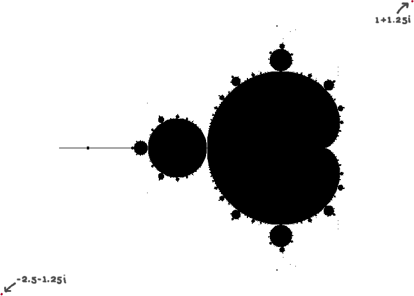

Mulțimea Mandelbrot reprezintă, din punct de vedere matematic, o mulțime de numere complexe care satisface o anumită condiție. Mai precis, mulțimea Mandelbrot reprezintă mulțimea tuturor numerelor complexe c pentru care următoarea serie converge:
unde z se inițializează cu 0.
Astfel, dacă există o limită L astfel încât:
pentru orice n, atunci numărul complex c este parte din mulțimea Mandelbrot. Dacă reprezentăm în planul complex toate numerele care fac parte din mulțimea Mandelbrot, obținem următoarea figură:
Toate punctele negre corespund numerelor complexe care îndeplinesc condiția de convergență. Cea mai interesantă proprietate a mulțimii Mandelbrot este că este infinită fără sa fie infinită - cu cât ne apropiem de marginile acesteia se relevă noi structuri, asemănătoare cu structurile anterioare (autosimilaritate) dar nu ajungem niciodată la final. Nu reușim să găsim un factor de mărire a imaginii la care să nu apară noi protuberanțe.
Configurată în acest mod, imaginea mulțimii Mandelbrot este alb/negru. Fiecare punct din planul complex converge sau nu. Dar aceasta presupune ca testul de convergență este făcut cu un număr infinit de iterații. Cu cât numărul de iterații care “decide” convergență unui punct este mai mare, cu atât imaginea devine mai “precisă”. Punctele aflate pe marginea mulțimii vor converge cu viteze diferite. Dacă reprezentăm diferite viteze de convergență cu diferite culori, obținem imaginile cunoscute ale mulțimii Mandelbrot.
Interfața curentă oferă următoarele opțiuni:
- Mandelbrot complet
- Imaginea completă a mulțimii Mandelbrot.
- Mandelbrot zoom 1
- Fragment al mulțimii Mandelbrot
- Mandelbrot zoom 1
- Un fragment mai apropiat al mulțimii Mandelbrot
Codul care generează mulțimea Mandelbrot este adaptat din codul următor:
https://rembound.com/articles/drawing-mandelbrot-fractals-with-html5-canvas-and-javascript